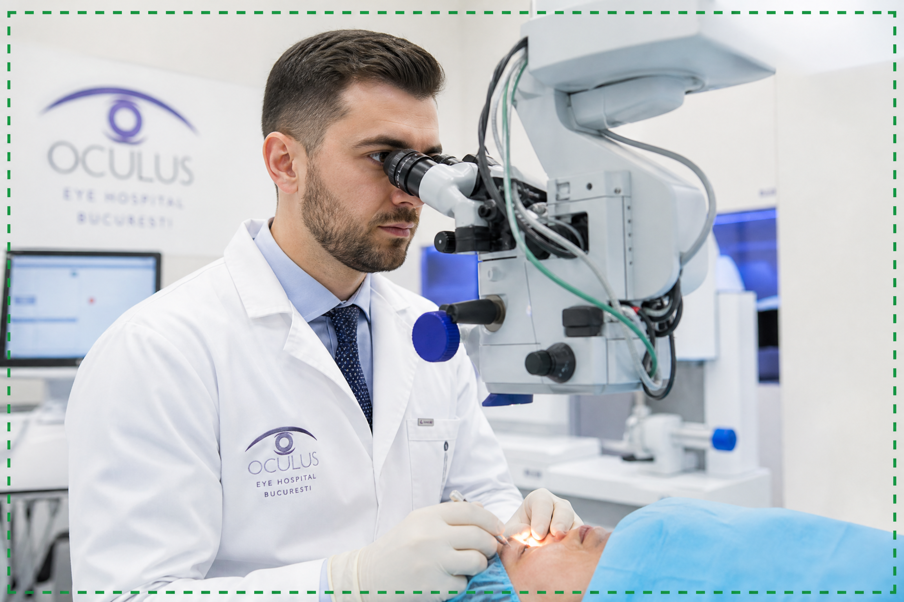

Oamenii de Știință Români Dezvăluie: Secretul Carpaților pentru o Vedere Perfectă!
În inima Munților Carpați, o echipă de cercetători români a făcut o descoperire uimitoare. Un ingredient rar, ascuns de secole, a fost identificat ca fiind cheia pentru regenerarea vederii. Acest secret, transmis din generație în generație de către bătrânii munților, este acum la un pas de a revoluționa modul în care înțelegem și tratăm problemele oculare.
DESCOPERĂ SECRETUL CARPAȚILOR
De Ce Vederea Ta Se Deteriorează? Adevărul Șocant!
Mulți cred că pierderea vederii este o parte inevitabilă a îmbătrânirii. Însă, cercetările noastre, inspirate de înțelepciunea ancestrală a Carpaților, arată că adevărata cauză este o deficiență la nivel celular. Celulele oculare nu mai primesc nutrienții esențiali și nu se mai regenerează eficient, ducând la vedere încețoșată și degenerare. Acest ingredient rar ajută la reactivarea acestor procese vitale.
Imaginează-ți o viață în care poți citi litere mici, recunoaște fețe de la distanță și te poți bucura de frumusețea lumii fără restricții. Unde ochii tăi sunt ageri și plini de viață, iar tu îți recapeți încrederea și independența. Aceasta este realitatea pe care o trăiesc persoanele care au beneficiat de această descoperire românească. Nu este doar o îmbunătățire a vederii, ci o recuperare completă a calității vieții.
VEZI CUM FUNCȚIONEAZĂ REVOLUȚIASoluția Naturală, Validată Științific
Pe baza acestui ingredient rar, a fost dezvoltat un protocol special care vizează direct regenerarea celulară a ochiului. Acest protocol utilizează compuși naturali puternici, care ajută celulele oculare să-și recapete funcționalitatea optimă, permițând o vedere clară și de lungă durată. Este rezultatul cercetărilor românești de ultimă oră, combinate cu înțelepciunea naturii.

Am pregătit pentru tine o prezentare video exclusivă, în care Dr. Elena Popescu și echipa sa explică în detaliu această abordare revoluționară. Această informație ar putea fi cea mai importantă pe care o vei primi anul acesta. Apasă butonul de mai jos și urmărește prezentarea acum.
URMĂREȘTE PREZENTAREA ACUM